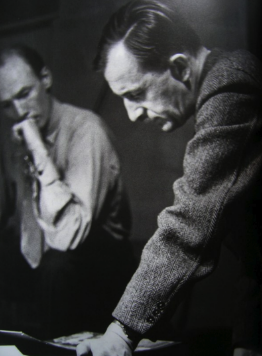

1898
러시아 성 페테스부르크와 핀란드 사이의 사냥막인
오고리취Ogolitchi 에서 출생
오고리취Ogolitchi 에서 출생
1905
아버지의 발령으로 모스크바로 이주
1915
성 페테스부르크에 있는 코르 데 파즈
군사학교에 등록, 중위로 졸업
군사학교에 등록, 중위로 졸업
1918
볼셰비키와의 오데사 전투에서 부상당함.
이때 부인이 될 간호사 니나를 만남
이때 부인이 될 간호사 니나를 만남
1933

디자인 실험실 Design Laboratories 시작
1941
뉴욕 밀러에서 프리랜서 아트 디렉터로 활동
뉴욕 ‘뉴 스쿨 오브 소셜 리서치’에서
디자인 실험실 시작
뉴욕 ‘뉴 스쿨 오브 소셜 리서치’에서
디자인 실험실 시작
1945
‘발레’ 출판, 그래픽 디자인 협회에서
수여하는 ‘올해의 서적’ 수상
수여하는 ‘올해의 서적’ 수상
1949
‘하퍼스 바자 포트폴리오’의
아트 디렉터 및 에디터 직임
1951년까지 3호 출간
아트 디렉터 및 에디터 직임
1951년까지 3호 출간
1954
3년간 예일 대학교 디자인 및 건축대학에
객원 크리틱으로 출강
객원 크리틱으로 출강
1958
‘하퍼스 바자’에서 은퇴
1964
애비든의 사진 스튜디오(AIGA 후원)와
스쿨 오브 비주얼 아트에서
디자인 실험실 지도
스쿨 오브 비주얼 아트에서
디자인 실험실 지도
1965
워싱턴에 있는 코코란 스쿨 오브 아트에서
디자인 실험실을 지도
디자인 실험실을 지도
1971
프랑스 르 토르Le Thor에서 4월 15일 사망
6월, 필라델피아 예술대학에서
박사학위Doctor of Fine Art 수여받음
.
6월, 필라델피아 예술대학에서
박사학위Doctor of Fine Art 수여받음